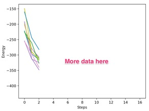
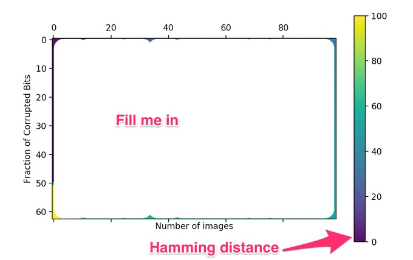

Hopfield Networks#
The first aspect of the brain that we will try to understand is memory. How does memory work? Roughly speaking, neurons somehow store sensational signals entering the brain as memories, then “remember” those memories by retrieving them when similar signals appear in the future.
The Hopfield network, invented by the physicist John Hopfield, is a model of how neurons store and process memories. We will learn how to implement this model, teach it to memorize images, and recover images from its memory.
The Hopfield network is a particular artificial neural network. In general, a neural network is a graph with neurons at the vertices of the graph and edges connecting the neurons to one another. The edges of this graph can be directed or undirected. The Hopfield network in particular has undirected edges. The Hopfield network has a set of variables that define the model. Each neuron \(i\) has a state \(s_i\) that represents the level of activation of the neuron. Additionally, each neuron has a bias (or threshold) \(b_i\) to activate and each edge has a weight \(W_{ij}\) associated with it that indicates how likely neurons \(i\) and \(j\) are to activate together.
The Hopfield network is a dynamical model. Its dynamics is governed by an update rule. At step \(n\) in the dynamics, we choose a random neuron \(i\) and update it state. The state of the \(i\)-th neuron in the network has \(s^n_i\) is either -1 or 1. To decide on the new state at step \(n+1\), we:
ignore the neuron’s current state,
compute the total “weight” coming into it, \(T_i \equiv \sum_{j\neq i} s^n_j W_{ji}\),
if \(T_i > b_i\) then the new state is \(s^{n+1}_i = 1\) else \(s^{n+1}_i = -1\)
Here is a sketch of a four neuron Hopfield network in a particular state. Included is a description of how to update the circled neuron’s state according to the above update rule.

Hopfield networks as an Ising Model#
The Hopfield network is really just an Ising model at zero temperature with a site-dependent magnetic field and long-ranged interactions. The analogous concepts are:
Hopfield Network \(\longleftrightarrow\) Ising Model
Neuron \(\longleftrightarrow\) Ising Spin
\(+1\) = Spin Up
\(-1\) = Spin Down
\(W_{ij}\) \(\longleftrightarrow\) \(J_{ij}\)
\(b_i\) \(\longleftrightarrow\) \(h_i\)
The energy of the corresponding Ising model is
Recall how we did Metropolis Markov chain Monte Carlo updates in the Ising model unit. We chose a spin at random and flipped it with a probability \(\min(1,e^{-\Delta E/k_BT})\) that depended on the energy of the old and new spin configurations. When the temperature is zero (\(T=0\)), we only accept spin flips that decreased the energy. This \(T=0\) Monte Carlo spin flip update is equivalent to the update rule of the Hopfield network.
There is a really nice implication of this analogy. First, notice that each update either decreases the energy or leaves it unchanged. This means that after enough updates you will eventually reach a configuration which is a local minimum in energy. At such a minimum, there are no further network updates to make; each attempted update step returns the same configuration. Consequently, for each input to a Hopfield network, there is a particular output to which the Hopfield network converges.
This property of Hopfield networks is reminiscint of memory. For different stimuli, I may remember different things. Our hope is that:
those “memories” are close to the original stimulus
we can find a way to remember particular memories.
Building a Hopfield Network#
The first step of this assignment is to write code to build a Hopfield Network. You will need to store the states \(s_i\) and biases \(b_i\) of the \(n\) neurons in two vectors and the weights \(W_{ij}\) in an \(n \times n\) matrix. You will need a function that updates the state (chooses a random neuron and updates it according to the above update rule). You will also need a procedure to determine if the network has converged. One way to go about this is to loop through all the neurons and check if any of them want to change (but don’t change them!). A function that computes the energy, as well as functions that set and return the state, are useful as well.
To set up the bias, choose a random number between \(-1\) and \(1\) for each \(b_i\).
To set up the weights, choose a random number between \(-1\) and \(1\) for each \(W_{ij}\). Remember that the hopfield network is symmetric so make sure that \(W_{ij}=W_{ji}\) and make sure that \(W_{ii}=0\).
Once you have this set up, set random weights and biases as well as random state and update it until it converges. At the moment, because we haven’t learned how to train the network, it’s not clear whether or not the results are sensible.
Seeing that the “energy” goes down during a run#
As the next step, we’d like to explicitly verify the statement that the energy never increases during a Hopfield network’s dynamics. Run your network through the update rule for a series of random initial states. Measure the energy of the initial states and their subsequent updates. Produce a graph, with lines for each run, plotting the energy versus update step. Show that the plots are monotonically non-increasing. This demonstrates that Hopfield networks converge to some “memory” for different initial conditions.
Grading
Produce a graph with 10 lines on it showing that the energy starting from 10 different intial conditions decays until convergence. It should look something like:

Hint: This was produced with 100 neurons. I ran 10 different initial conditions and ran each one until they converged. I printed out the energy every 100 update steps (i.e., equal to the number of neurons).
Training some inputs#
Now that you have a Hopfield network running, the next step is to learn how to train it to memorize some data. Hopfield networks can remember arbitrary bit-strings. In our case, these bit-strings will represent binary images, where \(\pm 1\) represent different color pixels in the image.
To memorize a set of \(m\) memories, we need to set our weights to
where \(v^{(k)}\) is an \(n \times 1\) column vector representing the \(k\)-th memory. In the example below, there will be 2 memories so \(m=2\) and so there will be a memory \(v^{(0)}\) and \(v^{(1)}\)
Let’s have it learn some images (we will start with some small images and then work up to doing bigger images). Take the images generated in makeImage.py. These are just binary numbers that can be converted into the state of the neurons.
Some example images to remember:
 Binary Number: 0000000000000100010000000000000000000000000010000000000000000001110000001000100001000001101000000001
Binary Number: 0000000000000100010000000000000000000000000010000000000000000001110000001000100001000001101000000001
Binary Number: 0001111000000111100000001100000000110000001111111000001100100000110000000011000000001100000000110000
Here I am using “0” and “1” which gets mapped to “-1” and “1”.
Write code that reads in these images and sets the weights of a Hopfield network to remember them. We want to see if the network can restore these images. To do this, we will feed it a “nearby” image and see how well it recovers the remembered image. Use these two approaches to give it a nearby image:
Take the face (or the tree) image and remove (or corrupt somehow) the left 1/4 of it. Save the resulting binary string and run a Hopfield network — trained on the uncorrupted image — with this as the input state. Take the binary string produced at the end of the simulation and see what the result is (by comparing both the output binary number and the picture it represents). You might want to print occassional snapshots of the picture as the network updates.
Write code that takes a string and perturbs it in \(k\) spots. Then feed it to your network and let it evolve and see if you can get it back.
Grading
Show that you can memorize these images and restore them after you’ve perturbed them.
How many memories can you remember?#
In this section, we will determine how many memories a Hopfield network can remember. To do this, write code that generates \(p\) memories and encodes their weights into a network. Then pick one of those target memories and corrupt it with \(k\) random bit flips. (When corrupting the bits of this memory, pick \(k\) distinct random neurons and flip their states. You can do this with numpy.random.shuffle(). Do not try to randomly pick neurons one at a time since you might “corrupt” a neuron multiple times this way.) Do this enough times for each \((p,k)\) to compute a reasonable average and produce a matrix of the Hamming distance between the target and the converged result. This will be a \(p \times k\) matrix which can be displayed in python using pylab.matshow.
Use 100 neurons. You probably want to use the version of your code which stores weights as a matrix.
You should be able to cleanly see how many memories the network can remember and how robust it is at remembering a memory given a partial version of that memory.
Grading
Produce a graph that shows how many memories you can remember. 
Hint: To produce this graph I used 100 neurons. For each point on this graph (memories x corrupted bits) I stored 5 sets of memories and attempted to recover a random (perturbed) memory from that set 20 times. I then computed the average Hamming distances between the memory I got and the memory I was trying to recover over these 100 attempts.
Looking at the energy landscape#
To accomplish this part of the assignment you need to download Graphviz or use the online version of graphviz (which is probably easier).
In this step we will to look at the energy landscape of the Hopfield network more explicitly. A Hopfield network with \(n\) neurons has \(2^n\) possible {on,off} combinations of neuron states. Each of these combinations can flow down in energy to (at most) \(n\) different nodes after attempting to update one of the neurons. This generates a graph.
Give your hopfield network 6 neurons and 2 memories.
Graphviz eats a description of a graph and generates a picture of it. The description looks like
Generate this graph, where a directed arrow corresponds to one configuration pointing to another configuration. For your first attempt, just color the target memories.
To compute a picture from this do
dot myFile.digraph -Tsvg -o myFile.svg
You can then load a svg file in your browser.
Hint: To do this, I used 6 neurons. This means \(2^6\) states. For each state I looped over the 6 neurons and produced all of the states that I might get from doing an update of that neuron (to do this I needed to write a Update(int neuron) function that eats a neuron to try to update. Then I printed out the two integers that represent the binary numbers before and after the update.
My energy landscape pictures look a bit like this:

Grading
Show the energy landscape.